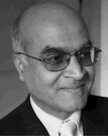
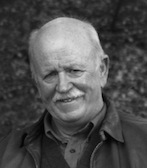

April 27, 2018, 10 am - 5 pm, University of California, Santa Cruz, Baskin E2 Simularium
Symposium theme: Current challenges and future directions in control and automation.
CITRIS and the Banatao Institute, People and Robots Initiative (CPAR) Control Theory and Automation Symposium will be held on Friday, April 27, 2018, 10 am - 5 pm at UC Santa Cruz. This symposium will kick off the 1st NorCal Control Workshop, an annual event providing a forum to bring together students, postdocs and faculty from various universities, as well as representatives from industry, in the Northern California region working in the broad area of systems and control to share knowledge and build new connections. The topics of interest are automation, systems and control theory, along with their applications in and intersections with, but not limited to: Devices, Hardware architecture, Machine Learning, Networking, Optimization, Robotics.
This inaugural event is organized by CITRIS and the Banatao Institute, People and Robots Initiative (CPAR), and the Cyber-Physical Systems Research Center (CPSRC) at UC Santa Cruz and focuses on a timely theme to the field of systems and control. A goal of the symposium is to spark discussions leading to answers to the following questions: What are the key challenges in the development of control and automation solutions to the complex problems of today? What are unique future opportunities and problems where control and automation would play a key role? The event features two keynote talks, a panel with systems and control experts from academia and industry on current challenges and future directions, as well as a poster and networking session.
Venue
UC Santa Cruz, Baskin Engineering, E2 180 (Simularium)
Schedule
| 10:00-10:05 | Welcome and introduction | ||
|---|---|---|---|
10:05-10:20 |
Mengqiao Yu (UC Berkeley) |
Making Intersections Safer with Intersection Intelligence Control System | |
| 10:20-10:35 | Nathan Bucki (UC Berkeley) | Improved Quadcopter Disturbance Rejection using Added Angular Momentum | |
| 10:35-10:50 | Erik Kiser (Naval Postgraduate School) | The Impact of Missions and Technologies on Contingency Base Fuel Consumption | |
| 10:50-11:00 | Short break | ||
| 11:00-11:15 | Richard Shaffer (UC Santa Cruz) | Open-Loop Optimal Path Planning for a Nonlinear Flexible Double Gimbal with Parameter Uncertainty | |
| 11:15-11:30 | Sina Dehghan (UC Merced) | PID2018 Benchmark Challenge: Model Predictive Control With Conditional Integral Control Using A General Purpose Optimal Control Problem Solver - RIOTS | |
| 11:30-12:15 | Industry Keynote | Speaker: P.K. Menon (Optimal Synthesis Inc.) Title: Dynamics and Control of Air Traffic Abstract: Safe and efficient air traffic management is emerging as a global technology challenge, driven by the substantial rise in demand for passenger and cargo transportation. This talk will present an overview of the air traffic management system, discuss a set of research problems the author has been involved in, and will outline future research directions. Bio: Dr. Menon received his Ph.D. at the Virginia Polytechnic Institute and State University, in Aerospace Engineering in 1983. He then worked as a Research Scientist at Integrated Systems Inc. Dr Menon served as an Associate Professor of Aerospace Engineering at the Georgia Institute of Technology from 1986 through 1992. He was a Visiting Scientist at the NASA Ames Research Center during 1988-1991. He also has served as a Research Professor and an Adjunct Lecturer at the Santa Clara University during 1988-2008. Dr. Menon started his career as a Mission Analyst with the Indian Space Research Organization, working on launch vehicle guidance and control system design. He is currently serving as the Chief Scientist and Chief Executive of Optimal Synthesis Inc, a high-technology aerospace research and development company he founded in 1992. He has published 55 papers in peer-reviewed international archival journals and has presented over 130 papers at international conferences. He has organized and contributed to several international workshops over the past 36 years. Dr. Menon has served as an Associate Editor of the AIAA Journal of Guidance, Control and Dynamics, and the IEEE Transactions on Control Systems Technology. Dr. Menon is the recipient of the 1994 M. Barry Carlton Award from the IEEE, Engineer of the Year award from the AIAA-San Francisco Section, and Exceptional Research awards from the AIAA and NASA. He is a Fellow of AIAA, a Senior Member of the IEEE, a member of the American Association for the Advancement of Science, Sigma Xi (Research Honor Society) and Sigma Gamma Tau (Aerospace honor society). Dr. Menon is a member of the Experimental Aircraft Association and the American Radio Relay League. | |
| 12:15-13:30 | Lunch with poster session | ||
| 13:30-13:45 | Berk Altin (UC Santa Cruz) | Predictive Control of Hybrid Dynamical Systems | |
| 13:45-14:00 | Gang Chen (UC Davis) | Formal Interpretation of Cyber-Physical System Performance with Temporal Logic | |
| 14:00-14:15 | Pierre-Jean Meyer (UC Berkeley) | Sampled-data Reachability Analysis using Sensitivity and Mixed-monotonicity | |
| 14:15-14:30 | Mo Chen (Stanford University) | A Differential Game Approach to Real-time Robust Planning | |
| 14:30-14:45 | Sylvia Herbert (UC Berkeley) | Safe Control of Autonomous Dynamic Systems for Real-time Planning | |
| 14:45-15:00 | Short break | ||
| 15:00-15:45 | Academia Keynote | Speaker: Arthur J. Krener (Naval Postgraduate School) Title: Computational Issues in Nonlinear Control and Estimation Slides, Optimal stabilization example Abstract: In the 1960’s and 1970’s, the foundations of Linear Control and Estimation Theory were developed: controllability, observability, linear quadratic regulation, Kalman Filtering, H-Infinity control, etc. In the latter part of the 1970’s, with the advent of workstations and reliable numerical linear algorithms (Linpack, Eispack, etc), the linear theory was realized in sophisticated software tools such as Matrix X, Control C and MATLAB. MATLAB eventually won the competition and its Control Toolbox has become the de facto standard numerical tool for linear systems. The theoretical foundations of nonlinear control and estimation were laid down starting in the 1970’s and the effort continues to this day. But very little attention has been given to general purpose software for nonlinear systems. There is more or less proprietary software for particular problems, almost every research paper ends with a simulation. But what is lacking is portable, scalable, reliable, relatively easy to use software for large classes of nonlinear systems. We shall discuss a few first steps in this direction. Bio: Arthur J. Krener received the Ph.D. in Mathematics from the University of California, Berkeley in 1971. From 1971 to 2006, he was at the University of California, Davis. He retired in 2006 as a Distinguished Professor of Mathematics. Currently he is a Research Professor in the Department of Applied Mathematics at the Naval Postgraduate School. His research interests are in developing methods for the control and estimation of nonlinear dynamical systems and stochastic processes. Professor Krener is a Life Fellow of IEEE, a Fellow of AMS, of IFAC and of SIAM. His 1981 IEEE Transactions on Automatic Control paper with Isidori, Gori-Giorgi and Monaco won a Best Paper Award. The IEEE Control Systems Society chose his 1977 IEEE Transactions on Automatic Control paper with Hermann as one of 25 Seminal Papers in Control in the last century. He was a Fellow of the John Simon Guggenheim Foundation for 2001-2. In 2004 he received the W. T. and Idalia Reid Prize from SIAM for his contributions to control and system theory. He was the Hendrik Bode Prize Lecturer at 2006 IEEE CDC and in 2010 he received a Certificate of Excellent Achievements from IFAC. He received the Richard Bellman Control Heritage Award from AACC in 2012 and in 2016 he received the IEEE Career Award in Control. | |
| 15:45-16:00 | Short break and panel preparation | ||
| 16:00-17:00 | Panel discussion | Theme: Emerging Trends and Future Directions in Control Theory and Automation Panelists: Juan.L. Aparicio Ojea (Siemens), Murat Arcak (UC Berkeley), Stefano Carpin (UC Merced), Arthur J. Krener (NPS), Sanjay Lall (Stanford), P.K. Menon (Optimal Synthesis Inc.) | |
| 17:00-onwards | Reception and poster session | ||
Logistics
Directions: UCSC campus maps and directions. Directions to Baskin Engineering Complex.
Parking lots: Core West Structure (closest parking lot to the Engineering Building 2). Additional campus parking lots.
Parking permits: Two parking attendants will be on hand right at the Core West parking structure from 8:30AM - 10:30AM to sell parking permits to symposium attendees. Simply follow the directional signage (which will be placed at the entrances of the UCSC campus) leading to the parking structure. Parking permits cost $9.00. Please ensure that you have cash or a check available to pay the attendants, as they are not able to accept payment by credit card. If you arrive between 10:30AM - 1:00PM, you can purchase your permit at the Main Entrance Kiosk. If arriving between 1:00PM - 5:00PM, you will need to purchase permits from the TAPS Parking Sales Office.
Food: Breakfast, lunch and coffee will be available for the workshop participants. A closing reception will be held in the evening.
WiFi: eduroam
Contact
Lorie Mariano (lorie@citris-uc.org) Angel Dominguez (adomingu@ucsc.edu) Michael Matkin (mmatkin@ucsc.edu)